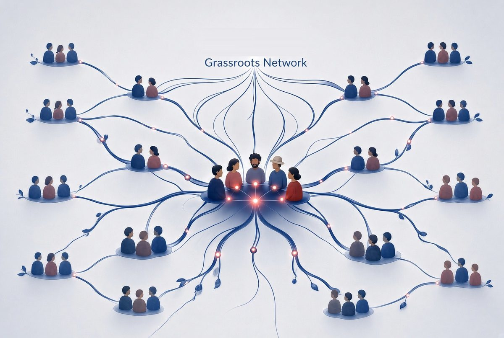

Partners & Grassroots Network

Take this to your precinct, your LD, or your neighborhood group. Watch the training together, talk about it, practice, then go out and talk to your neighbors. The more you practice, the more natural it gets.
How it works
- Club liaisons connect their clubs to the work on the ground.
- If you are a precinct committeeman, you can support a club and its volunteers on a light, voluntary basis.
- Everyone doing this work is part of the same team: neighbors covering neighbors.
- Keep tracking simple. Next neighbor. Next person.
Match the ask to the setting
A Republican club room can go deeper. In mixed or civic settings, stay local and keep the tone practical. Always come back to one next step, and close with “We are the they.”
Neighbors talking to neighbors — next neighbor, next person.